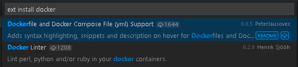
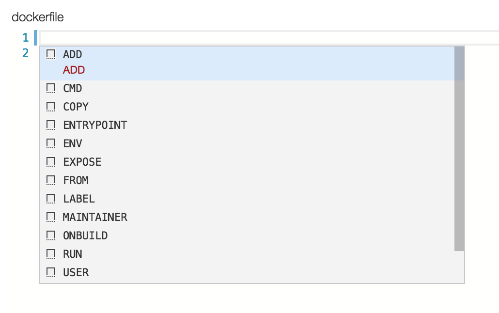
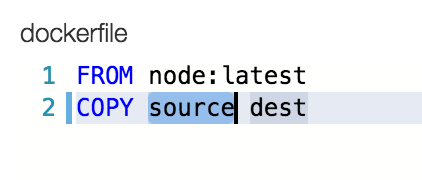
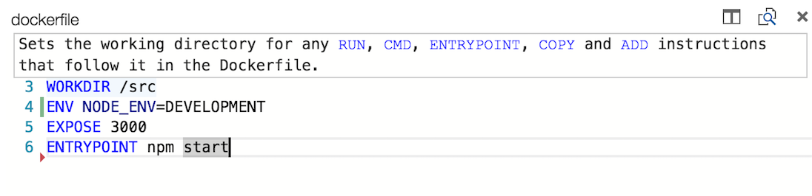
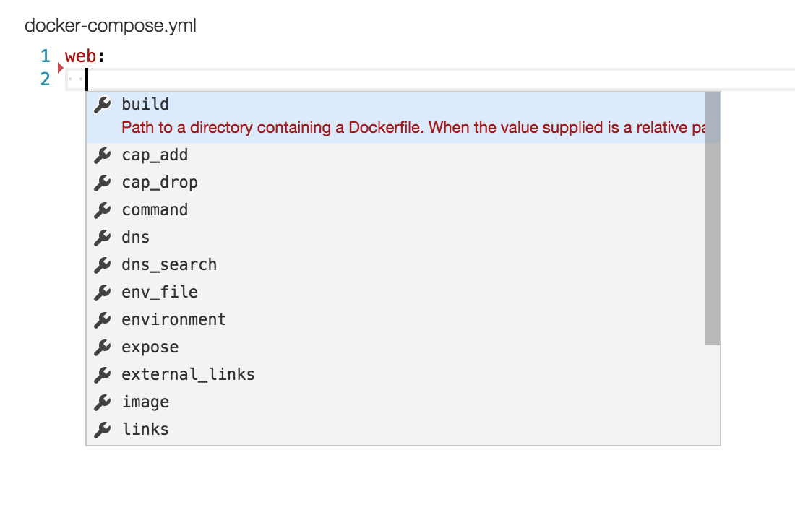
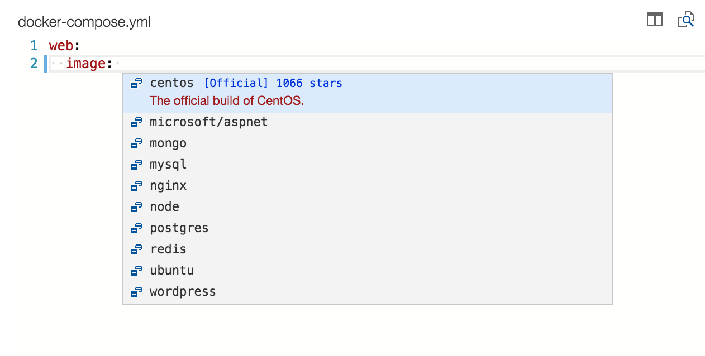
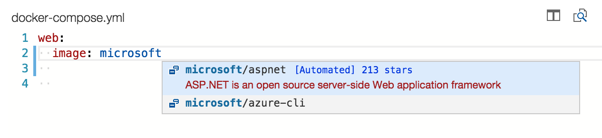

使用Docker工作
Docker 是现今十分热门的容器引擎，可以让你轻松地打包、部署和使用应用程序以及服务。无论你是一个经验丰富的Docker开发者还是刚刚开始学习它，Visual Studio Code都可以让你轻松地创造Dockerfile和docker-compose.yml两个文件到你的开发目录中。
安装Docker扩展插件
VS Code通过插件的方式支持Docker的使用。安装这一扩展插件，只需要按下kb(workbench.action.showCommands)，然后输入"ext install"并且运行Extensions: Install Extension命令来获得目前支持的插件列表。现在输入docker搜索所需插件然后选择Dockerfile and Docker Compose File (yml) Support插件。

Dockerfiles
通过Docker，你可以指定一系列的命令，通过它们在Dockerfile中建立镜像。一个Dockerfile是包含着一系列安装指令的文本脚本。
VS Code 很清楚Dockerfiles的结构以及可以使用的指令集，这意味着当你使用VS Code编辑这些文件时它可以给予你很多的经验指导。
- 在你的工作目录中创建一个新的文件命名为
Dockerfile 按下
kb(editor.action.triggerSuggest)来获得Dockerfile中命令的补全
按下
kbstyle(Tab)在段落中不同的区域移动。比如说，在COPY部分你可以输入source，接着按下kbstyle(Tab)移动到dest部分。
除了编辑Dockerfile时的各种功能，当你放置鼠标在一个Docker命令上的时候，Visual Studio Code将会提供关于这个命令的描述。比如说，当你的鼠标放到WORKDIR上面的时候你将可以看到以下描述。

想要获取更多关于Dockerfiles的信息，可以进入在docker.com上面的Dockerfile best practices
Docker compose
Docker Compose让你可以通过Docker定义以及运行多容器应用。你可以通过一个叫做docker-compose.yml的文件来定义容器的外形。
对于docker-compose.yml，Visual Studio Code的功能同样也是十分丰富的。它可以为合法的Docker compose指令提供IntelliSense,以及帮助你查询Docker Hub找到适合的镜像。
- 在你的工作目录中创建一个名为
docker-compose.yml的新文件 - 定义一个新的服务成为
web: 在第二行，通过
kb(editor.action.triggerSuggest)引入IntelliSense来查看所有合法的指令列表
对于
image指令，你可以再次输入kb(editor.action.triggerSuggest)来完成，而且VS Code会帮你在Docker Hub上查询公开的镜像。
VS Code 第一次使用会根据一些元数据比如说star的数量和描述去为你显示一系列热门的镜像。如果你继续输入，VS code会查询Docker Hub的索引去找到更加符合的镜像，包括搜索公开的profiles。比如说，搜索Microsoft会显示所有微软的镜像。
